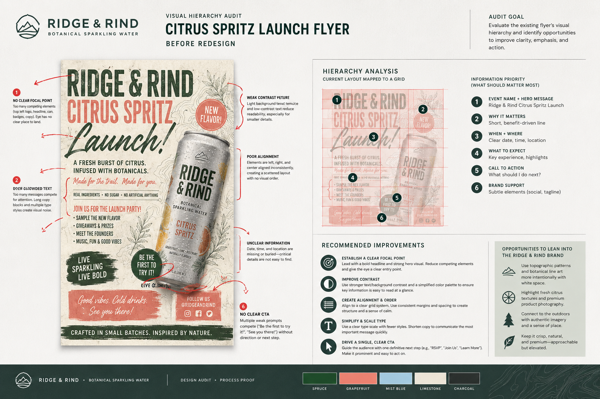
Visual Hierarchy Audit
Shows critique of contrast, alignment, proximity, type scale, and call-to-action clarity.
Week 1Example gallery
A sequence of finished campaign examples showing how the course skills connect across hierarchy, typography, imaging, branding, layout, web, accessibility, and video.

Shows critique of contrast, alignment, proximity, type scale, and call-to-action clarity.
Week 1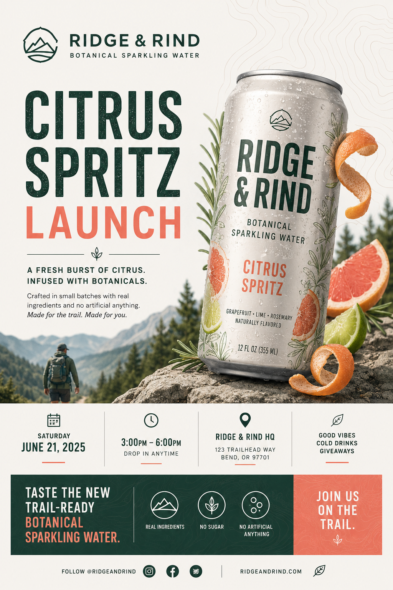
Shows visual hierarchy, contrast, type scale, grid, and event communication.
Week 2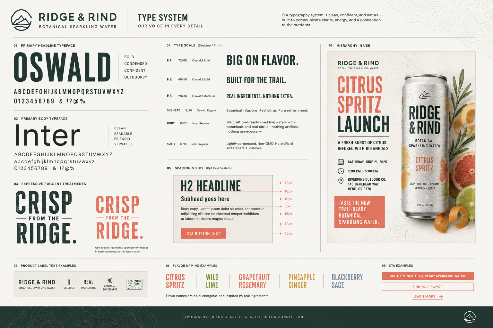
Shows type pairing, spacing, expressive typography, readability, and layout discipline.
Week 3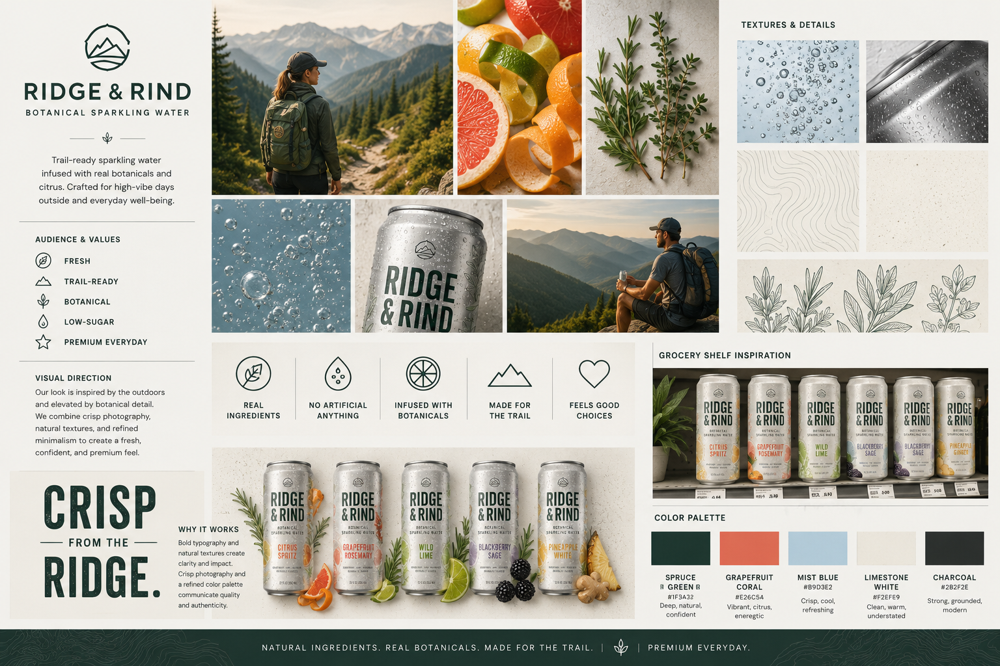
Shows research synthesis, color logic, audience targeting, and design direction.
Week 4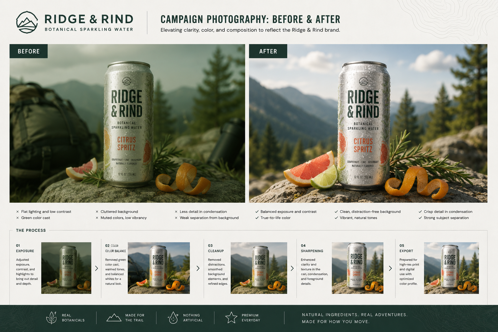
Shows exposure, color balance, cleanup, sharpening, and campaign image preparation.
Week 5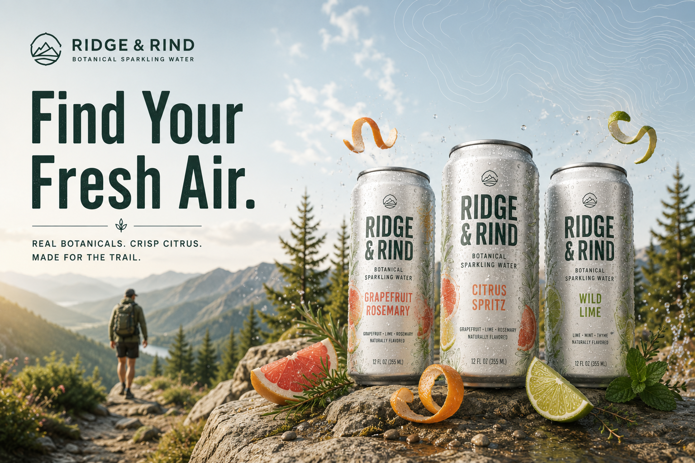
Shows correction, masking, lighting, source control, and campaign image production.
Week 6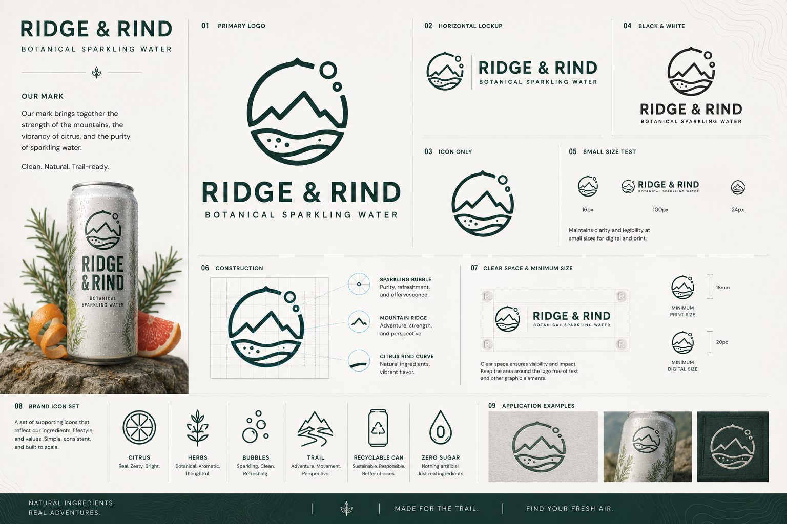
Shows vector construction, simplification, scalability, and identity thinking.
Week 7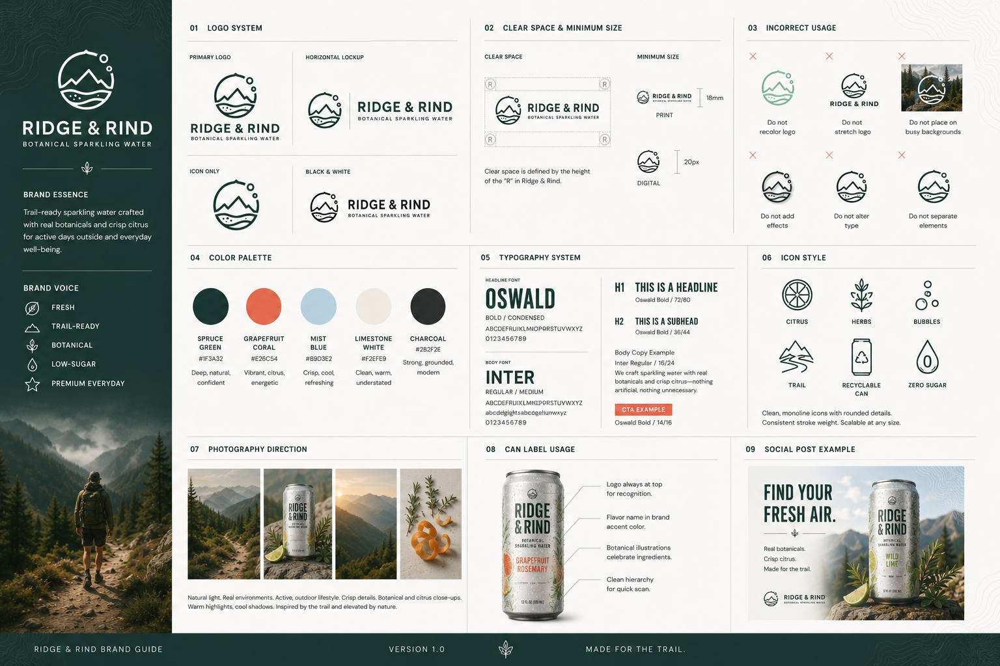
Shows logo rules, typography, palette, usage examples, and system consistency.
Week 8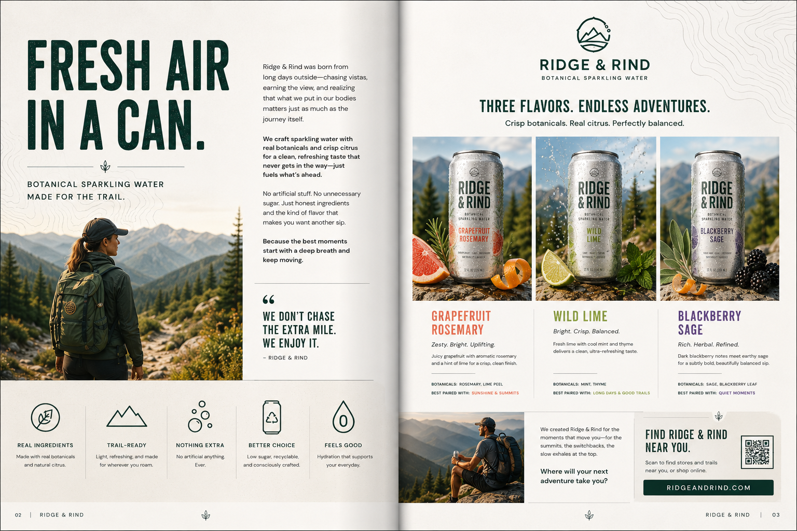
Shows editorial hierarchy, grid control, production awareness, and print readiness.
Week 9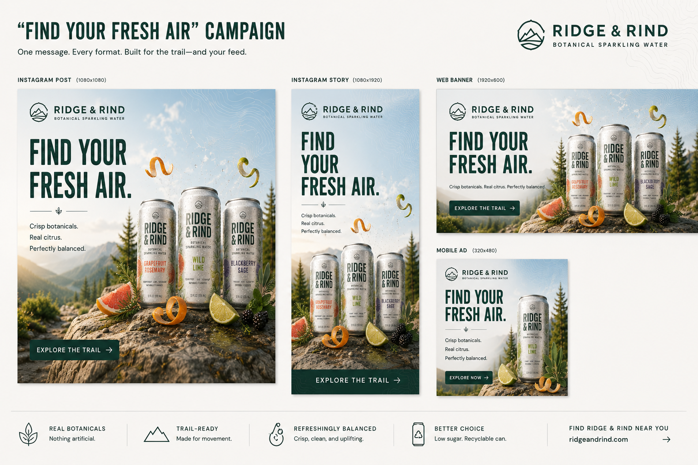
Shows multi-format design, social graphics, export planning, and brand consistency.
Week 10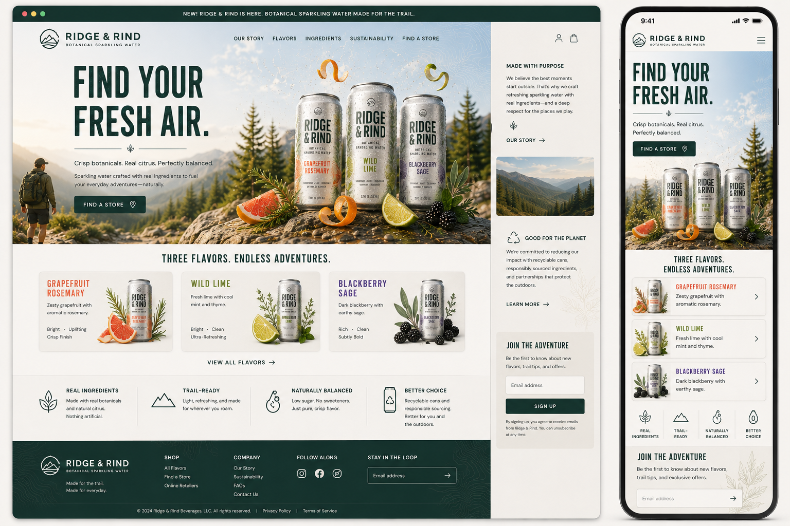
Shows responsive hierarchy, content structure, accessibility, and web asset planning.
Week 11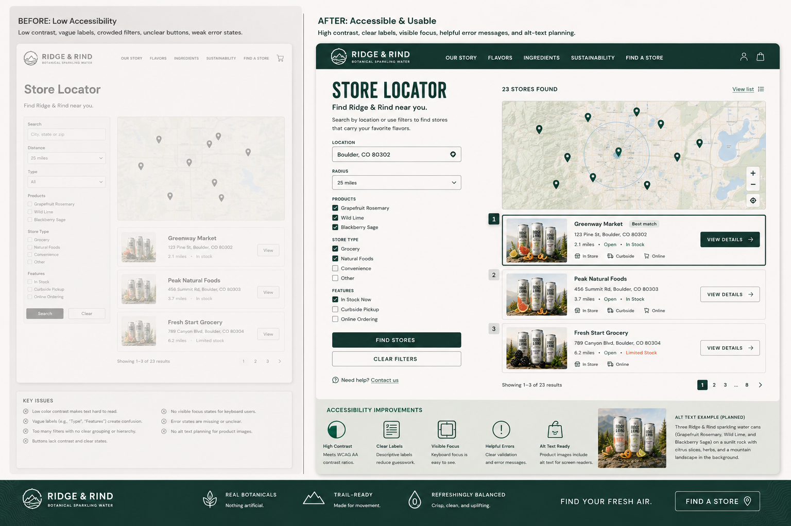
Shows form labels, contrast, focus states, readable buttons, and usability improvements.
Week 12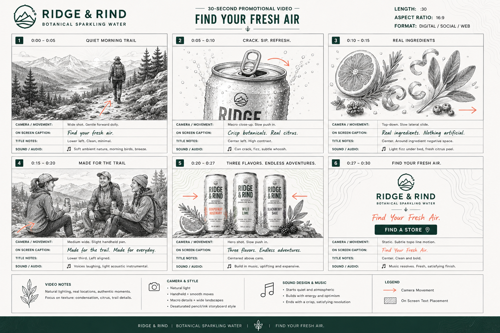
Shows storyboard frames, pacing, camera direction, captions, sound cues, and CTA planning.
Week 13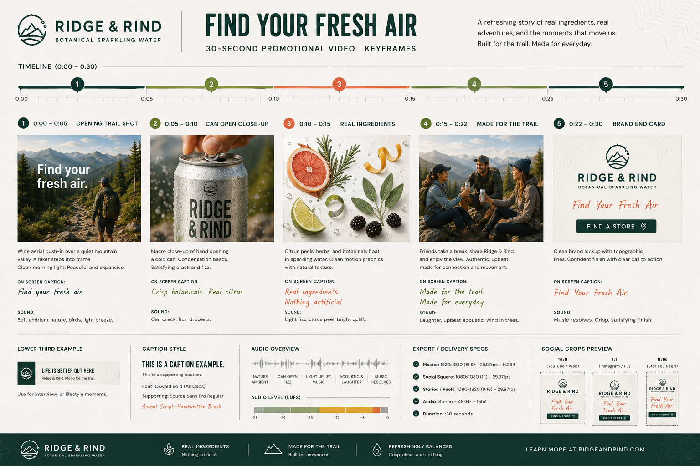
Shows title frames, captions, lower thirds, export planning, and compressed delivery.
Week 14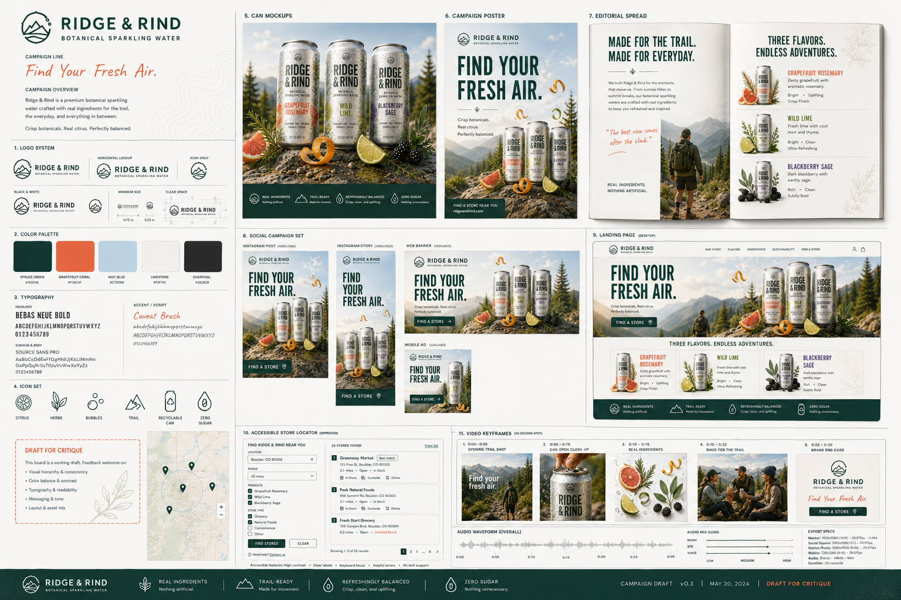
Shows integrated identity, print, digital, web, motion, and critique-ready presentation.
Week 15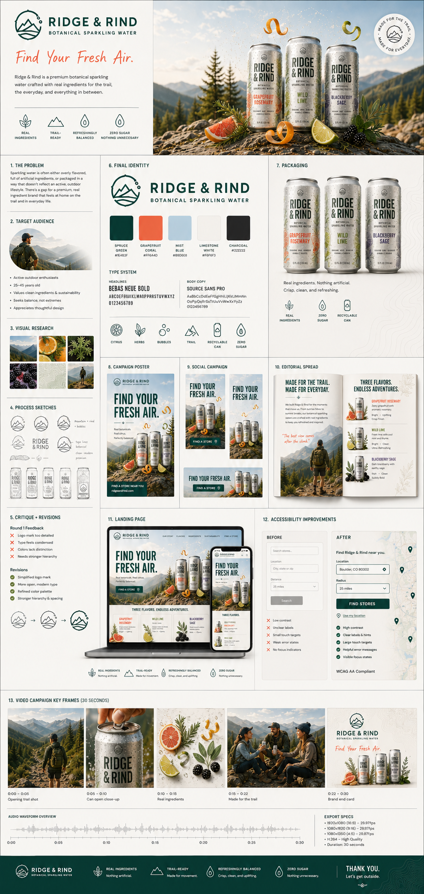
Shows final identity, collateral, web, accessibility, video, critique response, and case study presentation.
Week 16